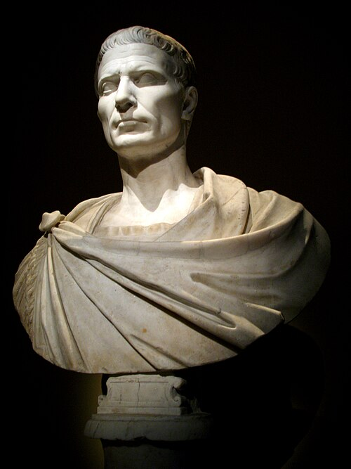

 Gaius Julius Caesar (/ˈkeːsːɑr/; lat. Gaius Iulius Caesar [ˈɡaː.i.ʊs ˈjuː.li.ʊs ˈkae̯.sar]; 12. tai 13. heinäkuuta 100 eaa.[a] – 15. maaliskuuta 44 eaa.)[b] oli roomalainen valtiomies, sotilas ja kirjailija. Hän valloitti Gallian Rooman valtakunnalle ja oli ensimmäinen roomalainen, joka yritti valloittaa Britannian. Caesar aloitti ja voitti sisällissodan, jonka jälkeen hänestä tuli valtakunnan kiistaton johtaja. Hänet julistettiin elinikäiseksi diktaattoriksi. Tyytymättömät aristokraatit murhasivat hänet tasavallan nimissä Rooman senaatin istunnossa vuonna 44 eaa. Caesarin adoptoimasta Octavianuksesta tuli ensimmäinen Rooman keisari Augustus. Arvonimi keisari on johdettu Caesarin nimestä.